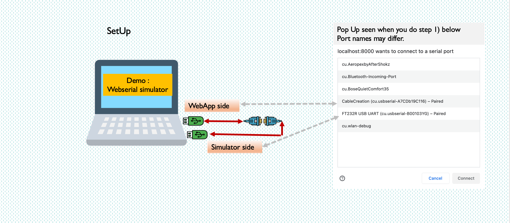

Note |
|
| WebSerial etc.- New in Chrome, version 89 or higher is required. | link. |
| Chrome on Android is not currently supported | link |
| Article reference | link |
|  |
| Note: | Recv. Time in ms is the time the software will wait starting from the first byte(s) received hoping that the full message comes in. You can increase this wait in case you are receiving partial or chopped responses. |
WebApp side |
Simulator side |
|||||
Step 4: Enter command to serial simulator
|
Check simulator recd. bytes Check as a string | |||||
| Check WebApp received bytes Check as a string |
Step 5: Enter simulator's response to WebApp |
|||||
| Note: |
You can send and receive in a continuous loop by setting "Send Continuous" to yes. To stop set the same dropdown to No. Ideal for long running stability checks. |